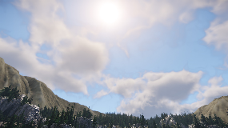
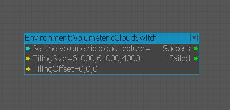

Обзор
Процедурное объемное облако — это функция для визуализации динамических облаков для крупномасштабных наружных сред. Облака процедурно генерируются путем сочетания функции шума и объемных текстур, создаваемых художниками. После этого облака визуализируются с использованием лучевого марширования и физически правдоподобного затенения.

Использование
Эта функция отключена по умолчанию. Прежде чем использовать это, вам необходимо установить CVar r_VolumetricClouds=1 или 2 в окне консоли или добавив его в system.cfg или game.cfg, чтобы активировать эту функцию. Если ничего не отображается, посмотрите CVar e_Clouds установлено на 1.
После его активации вы можете настроить параметры процедурных объемных облаков в Environment Editor (старая версия от 26 февраля) и Настройки уровня.
Следующие параметры влияют на окончательный вид облаков.
- Environment Editor
- Солнце
- Небесный Свет
- Затенение облаков
- Объемные облака
- Настройки уровня
- Состояние конверта
- Вектор ветра (ветер перемещает облака.)
- Объемное облако
- Состояние конверта
VolumetricCloudSwitch узел Flowgraph
VolumetericCloudSwitch был добавлен в группу узлов среды Flowgraph.
Используя этот узел, вы можете переключать определяемую пользователем объемную текстуру облака, размер плитки и смещение плитки во время выполнения.

CloudBlocker сущность
Этот объект может исключать или разрушать облака внутри или за пределами области сферы.
Одновременно на уровне могут работать до 4 сущностей.
| Параметр | Описание |
|---|---|
| Активный | Если это правда, блокировщик облаков будет активирован. |
| DecayEnd | Определяет конечное расстояние затухания плотности тумана. (в метрах) |
| DecayStart | Определяет начальное расстояние затухания плотности облаков. (в метрах) |
| DecayInfluence | Определяет влияние снижения плотности тумана. |
CVars
Квар | Описание | Комментарий и примеры |
|---|---|---|
| r_VolumetricClouds | Включает процедурные объемные облака. | 0 – отключено (по умолчанию) 1 – включено (разрешение 1/2x) 2 — включено (разрешение 1/4x) |
| r_VolumetricCloudsRaymarchStepNum | Установите количество шагов лучевого марширования для процедурных объемных облаков. Допустимое число — от 16 до 256, и оно должно быть кратно 16. | 64 (по умолчанию) |
| r_VolumetricCloudsPipeline | Установите режим конвейера процедурных объемных облаков. | 0 — Монолитный шейдерный конвейер, использующий меньше памяти. 1 — конвейер с несколькими шейдерами, использующий больше памяти, в основном быстрее (по умолчанию). |
| r_VolumetricCloudsStereoReprojection | Включает стереоскопическое перепроецирование процедурных объемных облаков для ускорения рендеринга. | 0 – отключено. 1 – Включено. (по умолчанию) |
| r_VolumetricCloudsTemporalReprojection | Установите режим временного перепроецирования для процедурных объемных облаков. | 0 — быстрее, но склонен к мерцанию. 1 - немного медленнее, но меньше мерцающих артефактов. (по умолчанию) |
| r_VolumetricCloudsShadowResolution | Установите разрешение карты теней объемных облаков для отбрасывания тени на местность и облаков с низкой штриховкой — LOD. | 64 (по умолчанию) |